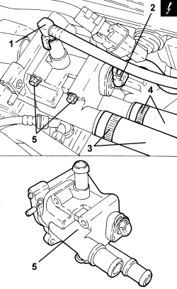

1088C36 THERMOSTAT SUPPORT - R.R.
- Path
- Procedures > 10 ENGINE > 1088 ENGINE COOLING > 1088C WATER PUMP AND THERMOSTAT > 1088C36 THERMOSTAT SUPPORT - R.R.
- Kind
- repair procedure (removal / refitting; the operation number is the code)
- Applies to
- engines: 1.8; all production periods
- Interactive page
- https://sloeber94.github.io/elrnDB-fCrm/en/#/194003037
Applies to: engines: 1.8; all production periods
 Removing
Removing
 Refitting
RefittingOp. 0010T20 ENGINE COOLANT - CHANGE
Op. 1088D39 RIGID PIPE BETWEEN THERMOSTAT AND OIL FILTER MOUNTING - R.R.
1. Disconnect the throttle body water supply pipe rapid connector.
2. Disconnect the electrical connection for the air temperature sensor.
Description | Connector | |
|---|---|---|
2 | Engine coolant temperature sensor/sender unit |
3. Loosen the band and disconnect the water supply pipe to the heater.
4. Loosen the band and disconnect the water return pipe from the heater.
5. Undo the bolts and remove the thermostat mounting from the cylinder head, complete with O-ring.

Applies to: engines: 1.8; all production periods
Refitting
Removing- Place the thermostat mounting in its housing complete with the new O-ring and secure it to the cylinder head using the bolts.
- Connect the water return pipe from the heater and tighten the band.
- Connect the water supply pipe to the heater and tighten the band.
- Connect the electrical connection for the coolant temperature sensor.
- Connect the throttle body water supply pipe rapid connector.
Op. 1088D39 RIGID PIPE BETWEEN THERMOSTAT AND OIL FILTER MOUNTING - R.R.